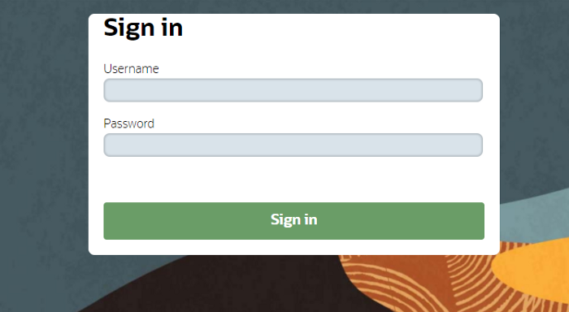
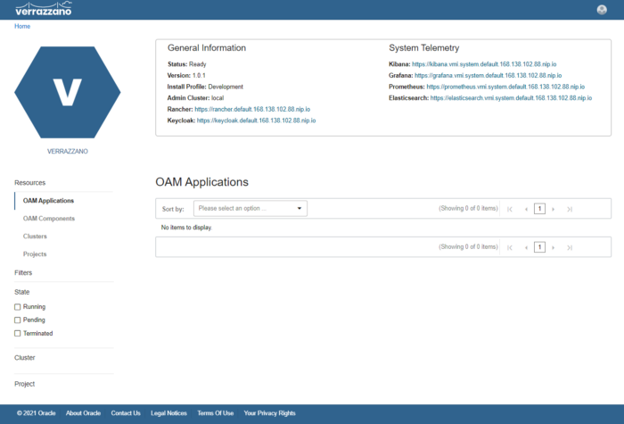
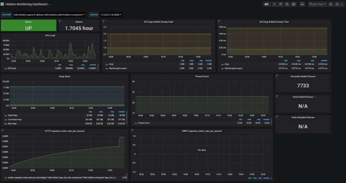
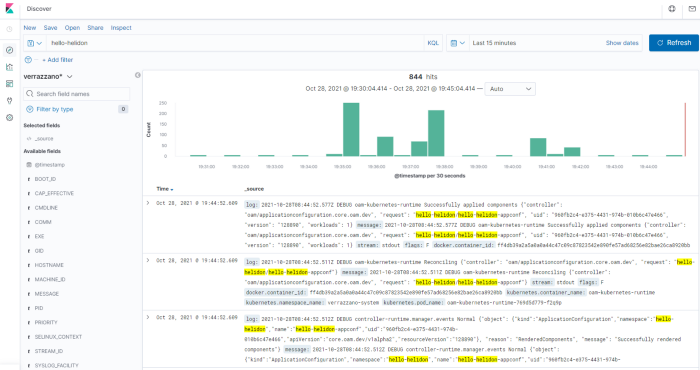
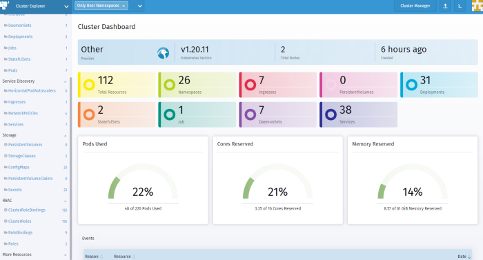

<div class="initial-content">
  <div id="main" role="main">

  <article class="page has-sidebar" itemscope itemtype="https://schema.org/CreativeWork">
    <meta itemprop="headline" content="Deploying Verrazzano on Oracle Container Engine for Kubernetes (OKE)">
    
    <meta itemprop="datePublished" content="2021-11-12T09:11:00+00:00">
    


    <header>
      <h1 id="page-title" class="page__title" itemprop="headline">Deploying Verrazzano on Oracle Container Engine for Kubernetes (OKE)
</h1>
      


    </header>

    <section class="page__content" itemprop="text">
      

        <picture class="alignright">
                <source srcset="assets/verrazzano-logo.png 1x" />
                
            </picture>

<p>Oracle recently released <a href="https://verrazzano.io/">Verrazzano</a>, an “end-to-end container platform to deploy cloud native and traditional applications in multi-cloud and hybrid environments.” If that’s a lot to take in, it’s because Verrazzano, (v8o for short) packs a lot. In this post, we will explore deploying Verrazzano on <a href="https://docs.oracle.com/en-us/iaas/Content/ContEng/home.htm#top">OKE (Oracle Container Engine)</a>.</p>

<p>The single cluster deployment model is easy:</p>
<ul>
  <li>Create a Kubernetes cluster</li>
  <li>Install the Verrazzano platform operator</li>
  <li>Install Verrazzano</li>
</ul>

<p>After this, you can deploy your application of choice.</p>

<p>Remember, if you don’t yet have an OCI account, you can quickly sign up for one today by registering for an <a href="https://www.oracle.com/cloud/free/#always-free">Oracle Cloud Free Tier</a> account.</p>

<h2 id="creating-the-oke-cluster">Creating the OKE cluster</h2>
<p>We will start by creating the OKE cluster using <a href="https://github.com/oracle-terraform-modules/terraform-oci-oke">Terraform OKE module</a>. Since we are only taking Verrazzano for a spin, we only need the bare minimum features. Follow the <a href="https://github.com/oracle-terraform-modules/terraform-oci-oke/blob/main/docs/quickstart.adoc">quickstart</a> guide, create the providers and create a copy of the terraform.tfvars.example and rename the copy to terraform.tfvars. Ensure the following features/resources are enabled/created:</p>

<div class="language-plaintext highlighter-rouge"><div class="highlight"><pre class="highlight"><code>create_bastion_host = true
bastion_access = ["anywhere"]
create_operator                    = true
enable_operator_instance_principal = true
node_pools = {
  np1 = { shape = "VM.Standard.E4.Flex", ocpus = 2, memory = 32, node_pool_size = 2, boot_volume_size = 150}
}
</code></pre></div></div>

<p>Follow the rest of the quickstart to run terraform init and apply.</p>

<p>Once the cluster is created, use the convenient output to copy the command to ssh to the operator host:</p>

<div class="language-plaintext highlighter-rouge"><div class="highlight"><pre class="highlight"><code>ssh_to_operator = "ssh -i ~/.ssh/id_rsa -J opc@xyz.xyz.xyz.xyz opc@10.0.0.12"
</code></pre></div></div>

<p>From here onwards, all kubectl commands are executed on the operator host.</p>

<h2 id="installing-the-verrazzano-operator">Installing the Verrazzano operator</h2>

<p>Let’s first install the Verrazzano operator:</p>

<div class="language-plaintext highlighter-rouge"><div class="highlight"><pre class="highlight"><code>$ kubectl apply -f https://github.com/verrazzano/verrazzano/releases/download/v1.0.1/operator.yaml
</code></pre></div></div>

<p>and wait for the deployment to complete:</p>

<div class="language-plaintext highlighter-rouge"><div class="highlight"><pre class="highlight"><code>$ kubectl -n verrazzano-install rollout status deployment/verrazzano-platform-operator
Waiting for deployment “verrazzano-platform-operator” rollout to finish: 0 of 1 updated replicas are available…
</code></pre></div></div>

<p>Give it a couple of minutes and the operator should have deployed by then. Verify that the operator is running:</p>

<div class="language-plaintext highlighter-rouge"><div class="highlight"><pre class="highlight"><code>$ kubectl -n verrazzano-install get pods
NAME                                            READY   STATUS    RESTARTS   AGE
verrazzano-platform-operator-5f788568fd-w8cz7   1/1     Running   0          80s
</code></pre></div></div>

<h2 id="installing-verrazzano">Installing Verrazzano</h2>

<p>We can now install Verrazzano. We will use the dev profile for this exercise:</p>

<div class="language-plaintext highlighter-rouge"><div class="highlight"><pre class="highlight"><code>kubectl apply -f - &lt;&lt;EOF
apiVersion: install.verrazzano.io/v1alpha1
kind: Verrazzano
metadata:
  name: hello-verrazzano
spec:
  profile: dev
EOF
</code></pre></div></div>

<p>We need to wait for Verrazzano to install:</p>

<div class="language-plaintext highlighter-rouge"><div class="highlight"><pre class="highlight"><code>kubectl wait \
    --timeout=20m \
    --for=condition=InstallComplete \
    verrazzano/
</code></pre></div></div>

<h2 id="accessing-verrazzano">Accessing Verrazzano</h2>

<p>In order to access Verrazzano, you need to get the console URL:</p>

<div class="language-plaintext highlighter-rouge"><div class="highlight"><pre class="highlight"><code>$ kubectl get vz -o yaml
</code></pre></div></div>

<p>You will get a list of URLs printed. For example, my Verrazzano console URL is <code class="language-plaintext highlighter-rouge">https://verrazzano.default.168.138.102.88.nip.io</code>.</p>

<p>Access this url in your browser and you will be prompted to login:</p>

<picture class="aligncenter">
                <source srcset="assets/verrazzano-login.png 1x" />
                
            </picture>

<p>The username is <code class="language-plaintext highlighter-rouge">verrazzano</code> and you can obtain the password by issuing the following command:</p>

<div class="language-plaintext highlighter-rouge"><div class="highlight"><pre class="highlight"><code>kubectl get secret \
    --namespace verrazzano-system verrazzano \
    -o jsonpath={.data.password} | base64 \
    --decode; echo
</code></pre></div></div>

<p>You should now be able to access the Verrazzano console:</p>

<picture class="aligncenter">
                <source srcset="assets/verrazzano-console.png 1x" />
                
            </picture>

<h3 id="deploy-an-application-to-verrazzano">Deploy an application to Verrazzano</h3>

<p>We will deploy the hello-helidon application. First, create a namespace:</p>

<div class="language-plaintext highlighter-rouge"><div class="highlight"><pre class="highlight"><code>kubectl create namespace hello-helidon
</code></pre></div></div>

<p>and add labels to identify the namespace as managed by Verrazzano and enabled for Istio:</p>

<div class="language-plaintext highlighter-rouge"><div class="highlight"><pre class="highlight"><code>kubectl label namespace hello-helidon verrazzano-managed=true istio-injection=enabled
</code></pre></div></div>

<p>Next, deploy the Verrazzano <a href="https://verrazzano.io/docs/applications/#components">component</a>:</p>

<div class="language-plaintext highlighter-rouge"><div class="highlight"><pre class="highlight"><code>kubectl apply -f https://raw.githubusercontent.com/verrazzano/verrazzano/master/examples/hello-helidon/hello-helidon-comp.yaml
</code></pre></div></div>

<p>Then create the <a href="https://verrazzano.io/docs/applications/#application-configurations">Application Configuration</a>:</p>

<div class="language-plaintext highlighter-rouge"><div class="highlight"><pre class="highlight"><code>kubectl apply -f https://raw.githubusercontent.com/verrazzano/verrazzano/master/examples/hello-helidon/hello-helidon-app.yaml
</code></pre></div></div>
<p>You can now get the name of your pod:</p>

<div class="language-plaintext highlighter-rouge"><div class="highlight"><pre class="highlight"><code>$ kubectl get pods -n hello-helidon
NAME                                        READY   STATUS    RESTARTS   AGEhello-helidon-deployment-54979d7d74-6c9nw   1/1     Running   0          2m18s
</code></pre></div></div>

<p>And check if the application is ready:</p>

<div class="language-plaintext highlighter-rouge"><div class="highlight"><pre class="highlight"><code>$ kubectl wait — timeout=300s — for=condition=Ready -n hello-helidon pod/hello-helidon-deployment-54979d7d74–6c9nw
pod/hello-helidon-deployment-54979d7d74-6c9nw condition met
</code></pre></div></div>

<p>Lookup the hostname of the load balancer:</p>

<div class="language-plaintext highlighter-rouge"><div class="highlight"><pre class="highlight"><code>HOST=$(kubectl get gateway hello-helidon-hello-helidon-appconf-gw \
    -n hello-helidon \
    -o jsonpath='{.spec.servers[0].hosts[0]}')
</code></pre></div></div>

<p>You can then test the application:</p>

<div class="language-plaintext highlighter-rouge"><div class="highlight"><pre class="highlight"><code>$ curl -sk \
    -X GET \
    "https://${HOST}/greet"
</code></pre></div></div>

<p>This should return you the following:</p>

<div class="language-plaintext highlighter-rouge"><div class="highlight"><pre class="highlight"><code>{"message":"Hello World!"}
</code></pre></div></div>

<h2 id="observability">Observability</h2>

<p>Now, that we’ve got our application running and accessible, we want to also look at its logs and metrics. Verrazzano has got you covered in the form of the ELK stack for logging and the combination of Prometheus and Grafana for metrics and performance monitoring.</p>

<p>Let’s look at Grafana first. On the main page of the Verrazzano console, you will see a link to Grafana. You can use the same combination of username and password you used to log into Grafana. Once logged in, click on “Home” and select the “Helidon Monitoring Dashboard”:</p>

<picture class="aligncenter">
                <source srcset="assets/verrazzano-grafana.png 1x" />
                
            </picture>

<p>Similarly, access the Kibana dashboard and click on Visualize icon in the left menu. You will be prompted to create an index pattern. Select the verrazzano* and follow the wizard to add the index pattern. Search for hello-helidon and you should be able to see the following:</p>

<picture class="aligncenter">
                <source srcset="assets/verrazzano-kibana.png 1x" />
                
            </picture>

<p>From here, you can create your own visualizations and dashboards.</p>

<p>What if we want to peek at the Kubernetes cluster itself? Again, Verrazzano has got you covered. From the Verrazzano console, locate the link to Rancher and click on it. The default username is “admin” and you can retrieve the password as follows:</p>

<div class="language-plaintext highlighter-rouge"><div class="highlight"><pre class="highlight"><code>kubectl get secret \
    --namespace cattle-system rancher-admin-secret \
    -o jsonpath={.data.password} | base64 \
    --decode; echo
</code></pre></div></div>

<p>Once logged in, you will land on the cluster page and you will see an Explorer button. Click on it and you will be able to view your Kubernetes cluster:</p>

<picture class="aligncenter">
                <source srcset="assets/verrazzano-rancher.png 1x" />
                
            </picture>

<h2 id="summary">Summary</h2>

<p>Verrazzano packs a nice set of capabilities that helps you with the operational side of of Kubernetes. From monitoring to logging and security, there is a lot productivity that a Kubernetes or an application administrator can gain.</p>

<p>I hope you find this article helpful. In future, we will explore other features of Verrazzano, including multi-cluster deployment and network security among others.</p>


          <div class="sidebar sticky">
    <!-- <p><strong>Tags:</strong> <span class="tags">

            
            <a class="animated-link tag" href="/topics/open-source">open-source</a>
            <a class="animated-link tag" href="/topics/oke">oke</a>
            <a class="animated-link tag" href="/topics/kubernetes">kubernetes</a>
            <a class="animated-link tag" href="/topics/terraform">terraform</a>
            <a class="animated-link tag" href="/topics/devops">devops</a>
            </span>
    </p> -->
  


<div itemscope itemtype="https://schema.org/Person">

  

  <div class="author__content">
    
      <a href="https:/lmukadam.medium.com"><h3 class="author__name" itemprop="name">Ali Mukadam</h3></a>
    
    
      <div class="author__bio" itemprop="description">
        <p>Technical Director, Asia Pacific Center of Excellence.</p>

<p>For the past 16 years, Ali has held technical presales, architect and industry consulting roles in BEA Systems and Oracle across Asia Pacific, focusing on middleware and application development. Although he pretends to be Thor, his real areas of expertise are Application Development, Integration, SOA (Service Oriented Architecture) and BPM (Business Process Management). An early and worthy Docker and Kubernetes adopter, Ali also leads a few open source projects (namely <a href="https://github.com/oracle-terraform-modules/terraform-oci-oke">terraform-oci-oke</a>) aimed at facilitating the adoption of Kubernetes and other cloud native technologies on Oracle Cloud Infrastructure.</p>

      </div>
    
  </div>

  <div class="author__urls-wrapper">
    <ul class="author__urls social-icons">
      

      

      

      

      

      

      

      
        <li>
          <a href="https://www.linkedin.com/in/https://www.linkedin.com/in/alimukadam/" itemprop="sameAs" rel="nofollow noopener noreferrer">
            <i class="fab fa-fw fa-linkedin" aria-hidden="true"></i><span class="label">LinkedIn</span>
          </a>
        </li>
      

      

      

      

      

      

      

      

      

      

      

      

      

      

      

      

      

      

      

      
    </ul>
  </div>
</div>

  
  
  

  </div>


      </section>

      <footer class="page__meta">
        
        


        

  <p class="page__date"><strong><i class="fas fa-fw fa-calendar-alt" aria-hidden="true"></i> Updated:</strong> <time datetime="2021-11-12T09:11:00+00:00">November 12, 2021</time></p>


      </footer>
    </div>

  </article>
</div>

</div>

